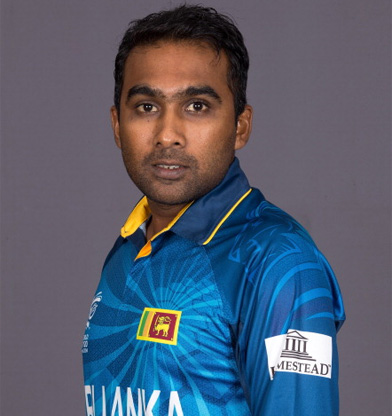

CricketerInfo
Sachin Tendulkar |
Sachin Ramesh Tendulkar born 24 April 1973) is a former Indian international cricketer and a former captain of the Indian national team, regarded as one of the greatest batsmen of all time.[4] He is the highest run scorer of all time in International cricket. Tendulkar took up cricket at the age of eleven made his Test debut on 15 November 1989 against Pakistan in Karachi at the age of sixteen, and went on to represent Mumbai domestically and India internationally for close to twenty-four years. |
 |
M.S.Dhoni |
Mahendra Singh Dhoni born 7 July 1981 is an Indian international cricketer who captained the Indian national team in limited-overs formats from 2007 to 2016 and in Test cricket from 2008 to 2014. An attacking right-handed middle-order batsman and wicket-keeper, he is widely regarded as the greatest finisher in cricket history.[1][2][3][4] He is also regarded as one of the best wicket-keepers in world cricket and is known to have very fast hands. |
 |
Ricky Ponting |
Ricky Thomas Ponting, AO (born 19 December 1974), is an Australian former international cricketer, and two-time World Cup winning captain in 2003 and 2007, widely regarded as one of the greatest batsmen of all time.[2] Ponting was captain of the Australian national team during its 'golden era'; between 2004 and 2011 in Test and 2002 and 2011 in ODI. He is a specialist right-handed batsman. |
 |
Mahela Jayawardene |
Denagamage Praboth Mahela de Silva Jayawardene (born 27 May 1977), known as Mahela Jayawardene, is a former Sri Lankan cricketer. He is regarded as one of the modern greats of batsmanship, especially due to his mastery of playing spin bowling. Jayawardene's highest test score, 374 against South Africa is the highest test score by a right handed batsman in the history of test cricket. |
 |